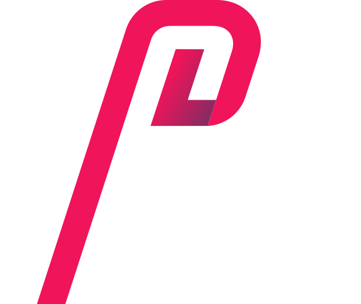

cистемний адміністратор
правових рішень
 >Перевертаємо уявлення про юридичні послуги
Консолідуючи багаторічний досвід і практику, юристи компанії супроводжують складні проекти і досягають прийняття ряду важливих для галузі рішень. Багато з них формують практику застосування морського права в Україні.